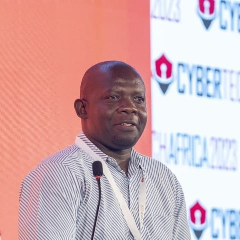

Cybercrime litigation support
Legal analysis and case support for matters involving online fraud, identity theft, unauthorised access and other forms of technology-enabled conduct.

Founder and Principal
A legal professional working at the meeting point of law, cybercrime, digital evidence and technology.
Profile
Keniz Agira founded Keniz Agira & Company Advocates to build a practice capable of addressing established legal questions while responding seriously to the legal consequences of technology.
His professional work has developed around cybercrime litigation support, electronic and digital evidence management, cybersecurity and digital forensics legal training, and the practical questions that arise when law, technology and human conduct meet.
That experience shapes the firm’s approach: understand the facts, preserve what matters, explain the law clearly and develop a course of action grounded in the client’s circumstances.
Core experience
Keniz brings a legal perspective to technical matters and a practical understanding of how digital information can affect investigations, disputes, institutions and individual rights.
Legal analysis and case support for matters involving online fraud, identity theft, unauthorised access and other forms of technology-enabled conduct.
Guidance on the management, preservation and legal treatment of electronic and digital material in proceedings and investigations.
Connecting forensic processes with questions of admissibility, procedure, accountability and the evidential requirements of legal matters.
Capacity building for legal, judicial and professional audiences on cybercrime, digital forensics and the admissibility of electronic evidence.
Keniz is identified by the Kenya Cyber Security and Forensics Association as its Chairman and as a legal professional with expertise in high-value fraud, identity theft and cybercrime. His work within the association sits within a wider commitment to professional collaboration, research, awareness and capacity building.
His published Cybertech Africa profile also records his role as a founding life member of KCSFA and his involvement in electronic evidence training, legal education and research-led resource development.
View the KCSFA leadership profileProfessional record
Selected roles and appearances documented by the professional and media sources supplied for this profile.
Published profiles identify Keniz as a lead trainer on electronic evidence at Worldwaysone and as a trainer on the admissibility of electronic evidence for the Judiciary Training Institute’s Magistrates Colloquium.
His Cybertech Africa profile records experience as a guest lecturer at the Kenya School of Law on cybercrime and electronic evidence.
Keniz has been profiled as a Cybertech Africa speaker, presenting his experience in cybercrime litigation support, cybersecurity training, digital forensics and electronic evidence management.
In September 2025, Kenya Broadcasting Corporation quoted Keniz in his role as KCSFA Chairman on the need for law and institutional systems to keep pace with artificial intelligence and other technological change.
A clear purpose
Technology changes quickly. Sound legal advice begins by understanding what changed, what the evidence shows and what the law requires.
The firm reflects Keniz’s belief that specialist knowledge should make difficult legal questions clearer and support decisions that are careful, practical and accountable.
Selected public record
These professional and media sources informed this profile. Current appointments and qualifications should remain subject to the firm’s final approval before publication.
Speak with the firm